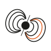

星心会 相談するASSESSMENT
WISC-V・新版K式｜公認心理師が実施
特性を数値で掴み、支援に直結させます。
検査して終わりにはしません。
結果を、日々の学習指導に反映します。
レオ（四日市市あさけが丘）で実施
CONTACT
法人共通の星心会 公式LINEと、本部の電話です。
059-315-0697LINE ID @279qxcql
検査の種類ごとに、対象が決まっています。
この二つの範囲以外の年齢は、お問い合わせください。
検査で特性を可視化し、日々の学習指導に反映します。視覚・聴覚の特性に応じた学習アプローチまで設計します。
電話、または法人共通の星心会 公式LINEで申し込みます。実施曜日や予約枠は、お問い合わせください。
公的機関への提出を目的とする場合は、事前に提出先へ有効性をご確認ください。市役所の福祉窓口や教育委員会によっては、民間施設の結果を公的な判定基準（支援学級への入級判定など）として受理しない場合があります。自治体により「医療機関での検査に限る」等の規定があります。
提出先によっては、民間施設の結果を公的な判定基準（各種申請や入級判定など）として受理しない場合があります。申請目的の場合は、事前に提出先へ有効性を確認してください。
事前面談、検査実施、結果報告書の作成、フィードバック面談です。
結果をもとに学習アプローチを設計します。レオの利用やペアレントトレーニングにも直結します。
CONTACT
法人共通の星心会 公式LINEと、本部の電話です。
059-315-0697LINE ID @279qxcql